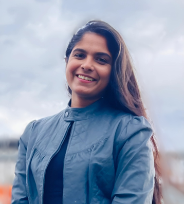

Moniesha
Thilakarathna
I am a PhD Candidate at the Collaborative Robotics Lab, University of Canberra, Australia, specialising in multimodal robotic grasping and intelligent robotic manipulation. My research focuses on developing adaptable and reliable robotic grasping systems capable of handling diverse objects in complex, unstructured environments. My work spans soft robotic grasping, 6D grasp pose estimation, multimodal grasp planning, experimental benchmarking, and data-driven decision-making, with a particular focus on robotic food waste sorting applications.

Robotic Sorting
Grasp Benchmarking
Soft Robotic Designing
Multimodal Grasping